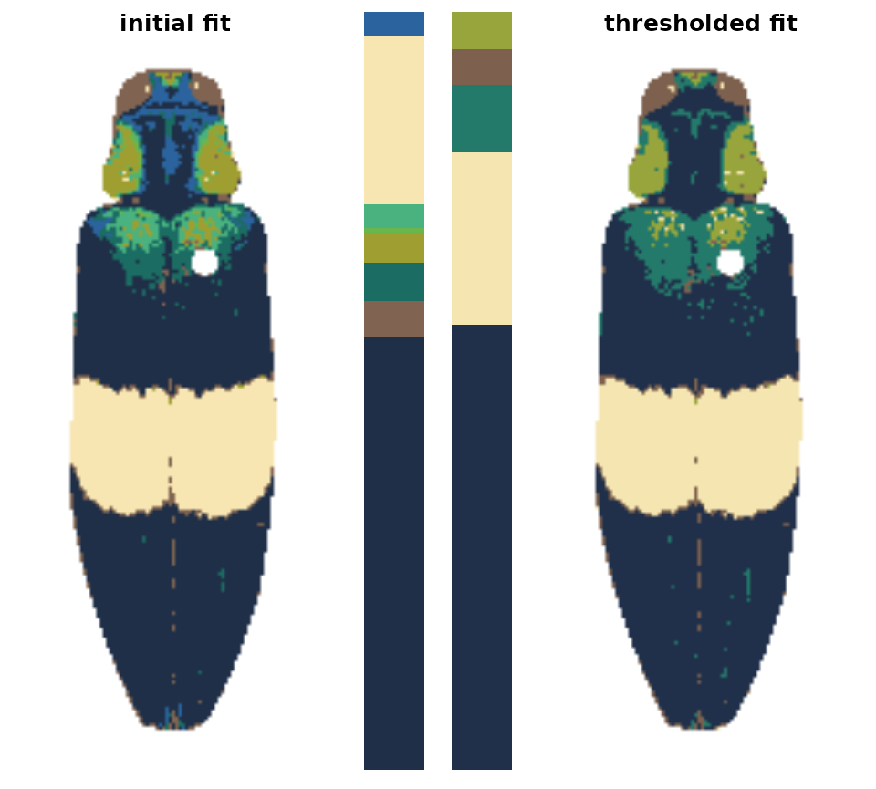

Using simple rules to improve the initial results.
-
Introduction
-
Step 0: Image acquisition and preparation
-
Step 1: Loading & processing images
-
Step 2: Initial clustering
- Step 3: Refinement
-
Step 4: Tweaks & edits
- Step 5: Visualizing & exporting output
You can also tour the functions in the function gallery.
Once we’ve reduced an image down to a tractable number of colors, we can define simple procedures for how to combine them based on similarity. recolorize (currently) comes with two of these: recluster, which merges colors by perceived similarity, and thresholdRecolor, which drops minor colors. Both are simple, but surprisingly effective. They’re also built on top of some really simple functions we’ll see in a bit, so if you need to, you can build out a similar procedure tailored to your dataset—for example, combining layers based only on their brightness values, or only combining green layers.
recluster() and recolorize2()
This is the one I use the most often, and its implementation is really simple. This function calculates the Euclidean distances between all the color centers in a recolorize object, clusters them hierarchically using hclust, then uses a user-specified cutoff to combine the most similar colors. As with recolorize, you can choose your color space, and that will make a big difference. Let’s see this in action:
library(recolorize)
corbetti <- system.file("extdata/corbetti.png", package = "recolorize")
init_fit <- recolorize(corbetti, plotting = FALSE)
#>
#> Using 2^3 = 8 total bins
recluster_results <- recluster(init_fit,
cutoff = 45)

Notice the color dendrogram: it lumped together clusters 4 & 7, clusters 3 & 5, and clusters 6 & 8, because their distance was less than 45. This is in CIE Lab space; if we use RGB space, the range of distances is 0-1:
recluster_rgb <- recluster(init_fit, color_space = "sRGB",
cutoff = 0.5)
In this case, we get the same results, but this is always worth playing around with. Despite its simplicity, this function is highly effective at producing intuitive results. This is partly because, in only using color similarity to combine clusters, it does not penalize smaller color clusters that can still retain important details. Because of its utility (and speed), I included a wrapper function, recolorize2, to run recolorize and recluster sequentially in a single step:
# let's use a different image:
img <- system.file("extdata/chongi.png", package = "recolorize")
# this is identical to running:
# fit1 <- recolorize(img, bins = 3)
# fit2 <- recluster(fit1, cutoff = 50)
chongi_fit <- recolorize2(img, bins = 3, cutoff = 45)
#>
#> Using 3^3 = 27 total bins

There’s also a lot of room for modification here: this is a pretty unsophisticated rule for combining color clusters (ignoring, for example, cluster size, proximity, geometry, and boundary strength), but it’s pretty simple to write better rules if you can think of them, because the functions that are called to implement this are also exported by the package.
thresholdRecolor()
An even simpler rule: drop the smallest color clusters whose cumulative sum (as a proportion of total pixels assigned) is lower than some threshold, like 5% of the image. I thought this would be too simple to be useful, but every once in a while it’s just the thing, especially if you always end up with weird spurious details.
chongi_threshold <- thresholdRecolor(chongi_fit, pct = 0.1)